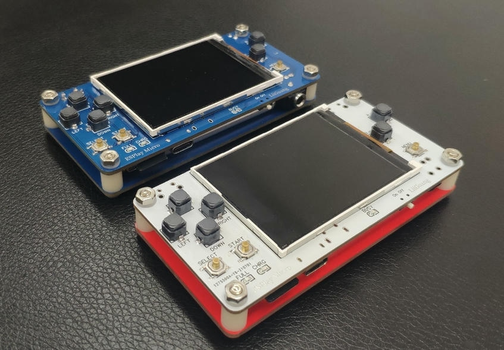

ESPlay Micro 制作记
[!INFO] 注意：本文件不再更新，最新内容请跳转：ESPlay Micro 制作记
参考¶

- ESPlay Micro微型开源游戏掌机（精修版2.0） - 嘉立创EDA开源硬件平台 (oshwhub.com)
- 开源掌机 ESPLAY V0.3 游戏机 - 嘉立创EDA开源硬件平台 (oshwhub.com)
总结¶
- 对于贴片原件，可使用锡膏+热风枪来快速焊接
- 对于 ESP32 Wrover 主控，不要使用锡膏的方式，容易出现芯片底部连锡，或者虚焊，应该用电烙铁
- 对于开关、按钮等原件，应该用电烙铁，如果使用热风枪加热可能导致原件烫坏
- 使用万用表确认电路连接正确，以及检测连锡导致的短路
- Type-C 引脚密集，可以在PCB板子触点上涂上【少量】锡膏，然后再用热风枪加热管脚，如果连锡则需要用热风枪拆下重新焊接
- 常规的焊接技巧参考这个系列视频：【13节一分钟焊接小技巧系列】
- 电池的焊接需要小心，因为焊接时若不小心造成正负极短路可能造成火灾，建议焊接电池插座
- JP1 跳线直接一坨锡，并且在刷机结束后不需要移除
- ESD芯片应该使用0603尺寸，而我用的是0402，这么小的尺寸非常难以焊接（经测试，不焊接也不会有任何影响）
- 屏幕排线的FPC连接器不需要购买，在触点上少量锡，对齐屏幕后再用电烙铁焊接
制作过程记录¶
- ESP32主控芯片连锡
- 应该使用助焊剂和电烙铁加热，这样锡融化后会自动紧贴引脚
- 如果锡太多，可以使用吸锡带和吸锡器
- 如果锡太少，可以使用锡膏+电烙铁融化
- 如果无论如何都无法解决短路，可加少量锡膏和助焊剂，再用电烙铁加热，新加热的锡会带动旧锡融化
- 开机白屏，无内容显示
- ESP32主控底部有残留的锡膏导致短路
- 用万用表测出短路的引脚，加上助焊剂，使用电烙铁加热引脚解决短路
- 无法读取SD卡、喇叭输出没声音、耳机只有右边有声音
- 通过查看电路图和用万用表测试没有发现问题
- 猜测是SD卡座的问题，拆除卡座用新的替换就解决了这个问题
- 由于是第一次焊，可能烫坏了某些原件，重做了一版解决
- 开机后屏幕花屏，并一致闪烁不显示内容
- 原因：系统尝试读取SD卡的保存状态，但是读取失败
- 插入SD卡或重新刷入固件即可修复
- 固件不支持中文
- 使用另一个项目【开源掌机 ESPLAY V0.3 游戏机】评论提到的固件【ESP32游戏机】刷入，白屏，此固件不支持。
- 使用 DIY掌机，自制ESP32游戏机，超详细教程，全是干货，看完你也会做_哔哩哔哩_bilibili 中的资料里面的rom，成功！
- 魔改 esplay: 将github上的esplay项目继续完善 也可以实现中文展示
- 我在上面仓库的基础上修改了一个版本，支持大多数功能：canwdev/esplay-retro-emulation at idf-v3.3 (github.com)
- 外放喇叭游戏有声音，音乐播放器没声音
- 这个版本的ESPlay硬件似乎无法相应LR两个按钮，通过修改系统代码使用Menu键开启了外放功能，但是有底噪
- 外放喇叭有底噪
- 不知道是硬件设计问题还是电容问题
固件编译¶
通过编译固件，来实现自定义功能。
以下项目，我使用 ArchLinux（Manjaro）于 20221113 编译成功。
- 如果使用 Linux 则不需要下载上述工具链，按照教程安装环境即可
- ESP-IDF 下载：
- 编译 esplay-retro-emulation 需要 esp-idf-v3.3 版本 https://dl.espressif.com/dl/esp-idf/releases/esp-idf-v3.3.zip
- 如果使用 Windows，ESP-IDF 3.3工具链下载： https://dl.espressif.com/dl/esp32_win32_msys2_environment_and_toolchain-20181001.zip
- 编译 esplay-base-firmware 需要 esp-idf-v4.4 版本 https://dl.espressif.com/github_assets/espressif/esp-idf/releases/download/v4.4.3/esp-idf-v4.4.3.zip
- 编译 esplay-retro-emulation 需要 esp-idf-v3.3 版本 https://dl.espressif.com/dl/esp-idf/releases/esp-idf-v3.3.zip
1. 编译 esplay-base-firmware¶
安装 esp-idf-v4.4 环境 ESP-IDF 编程指南 - ESP32 - — ESP-IDF 编程指南 v4.4.3 文档 (espressif.com)
执行命令开始编译：
或刷入权限问题：输入以下命令，重启解决（与 ESP32 创建串口连接 ）
- Ubuntu: sudo usermod -a -G dialout $USER
- Arch Linux: sudo usermod -a -G uucp $USER
[!WARNING] 编译过程中会因为警告导致编译失败，禁用 make 警告重新编译：
- 搜索
-Werror=all替换为（空字符串） - 搜索
-Werror替换为-Wno-error - 然后再次
make
成功编译：
2. 编译 esplay-retro-emulation¶
-
需要切换为 esp-idf-v3.3： 快速入门 — ESP-IDF 编程指南 v3.3 文档 (espressif.com)
- Linux 需要安装工具链：https://dl.espressif.com/dl/xtensa-esp32-elf-linux64-1.22.0-97-gc752ad5-5.2.0.tar.gz，并解压到
~/esp/xtensa-esp32-elf/目录 - 需要安装 ffmpeg 并将其放入 PATH（Manjaro 已经自带，无需配置）
- ESP-IDF 支持 Python 3.6 及以上版本
- Linux 用户，需要修改
mkrelease.sh脚本，将环境变量、目录和 mkfw 位置设置正确 - Linux 需要将
mkrelease.sh的 CRLF 改为 LF（使用VSCode）
设置工具链的环境变量：
配置好环境后，按照 esplay-retro-emulation 的文档，运行 mkrelease.sh 进行编译，如果项目目录下得到一个几KB的 esplay-retro-emu.fw，那么恭喜你编译失败了，此时需要一行行地执行脚本查找错误。
记录一下我遇到的几个坑
- Python 依赖未安装
- 通过控制台的提示，安装依赖：
/usr/bin/python -m pip install --user -r /home/___/esp/esp-idf/requirements.txt
- 通过控制台的提示，安装依赖：
- 编译 esplay-launcher 提示 gamepad.h: No such file or directory
- 设置环境变量 IDF_PATH, ESPLAY_SDK
- 在
esplay-launcher/main/graphics.c中找不到文件gfxTile.inc- 手动将
gfxTile.png转换为gfxTile.inc - 或直接使用这个项目的文件 esplay-retro-emulation/gfxTile.inc at master · FantasyGmm/esplay-retro-emulation (github.com)
- 手动将
assets/Tile.png不存在- 需要手动将
assets/Tile.xcf转换成 png 格式，这个图像将作为 rom 的封面
- 需要手动将